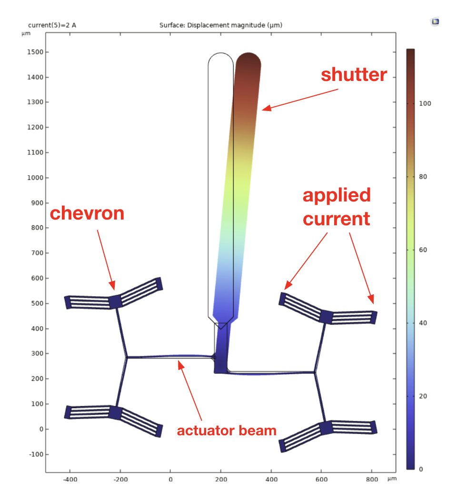
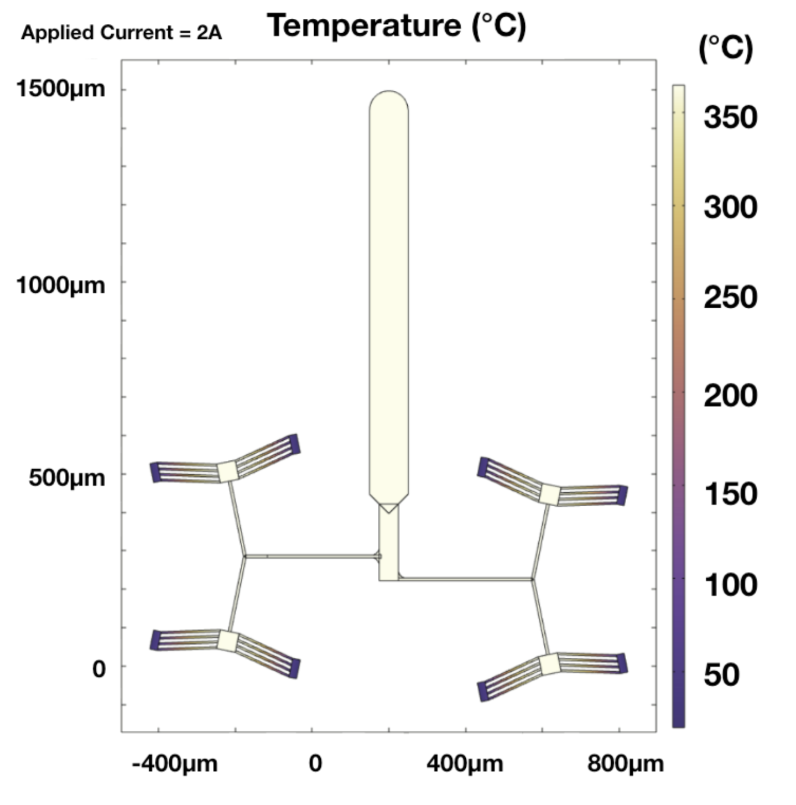
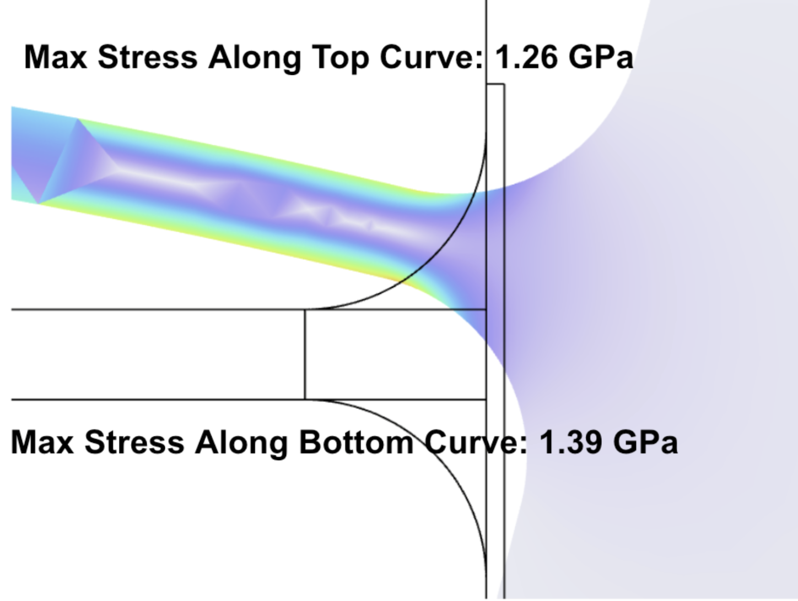
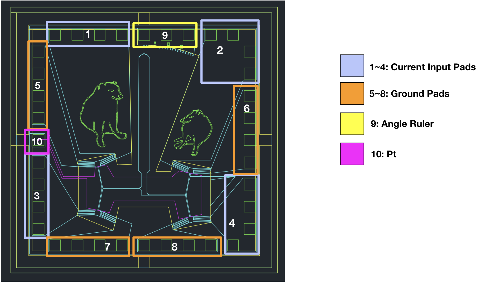
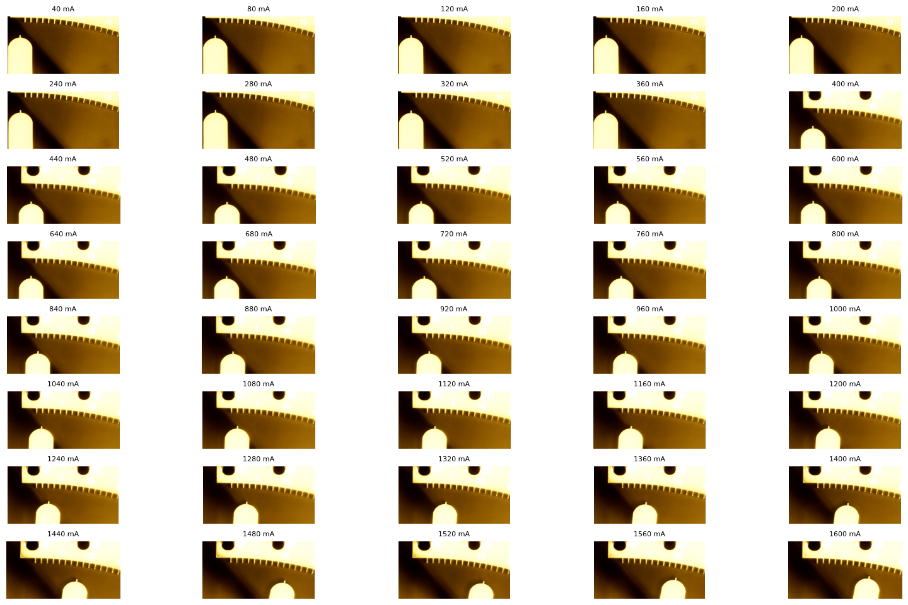
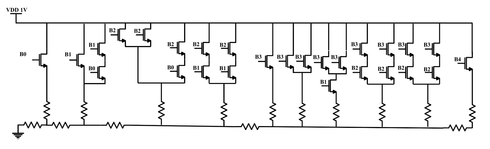
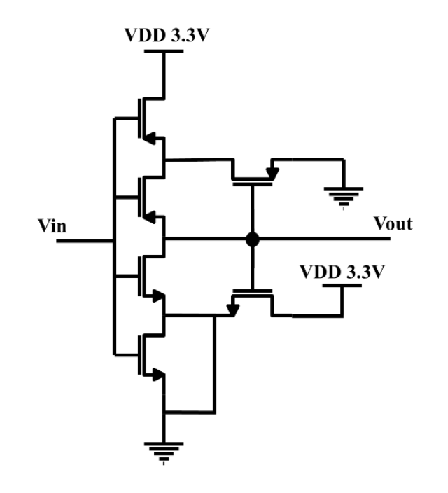

Thermally Actuated Optical Shutter
Abstract: Standard laser cutting and engraving systems require shutters to prevent continuous laser exposure, which can cause thermal effects on the substrate that limit resolution and precision. This project presents a MEMS laser shutter with a tunable frequency of operation, enabling its usage in a variety of micro-laser applications. By supporting precise frequencies, the machine aims to obtain a flexible and efficient laser shutter system. The proposed control mechanism uses a microcontroller-operated, voltage-controlled ring oscillator to ensure precise switching frequencies.

Figure I. Fabricated MEMS device under the Microscope.
MEMS Modeling, Fabrication and Testing:
Our MEMS device is designed based on a silicon-on-glass(SOG) model...
Modeling: Modelings were done on COMSOL using the Solid Mechanics...
  MEMS Mask Layouts: Mask layout was done using AutoCAD...
Testing: The fabricated MEMS chip was tested...
Here is a short clip of our MEMS optical shutter operating with 1.6A of current...
Here is a short clip of the MEMS optical shutter being burnt at 1A...
Circuits
The circuit design includes three main devices that allow the system to function together...

We used a ladder DAC and carefully tuned the W/L ratio...

A voltage controlled oscillator is constructed to generate sine waves...


With the help of a Schmitt Trigger, the system is able to transform the output from a sine wave...

The off-chip circuit consists of a boost converter to increase the Schmitt Trigger output...